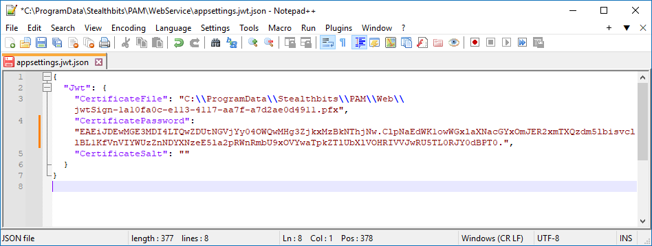

Overview
This article outlines the steps to configure a service mesh in Netwrix Privilege Secure (NPS).
-
If you have two app servers with internal PostgreSQL on each, you must configure high availability (HA) before configuring a service mesh. For additional information on the HA setup, refer to the following article: How to Use NPS.HaMgr.exe.
-
In both PostgreSQL and SQL Server deployments, you must complete the key exchange in your environment before configuring a service mesh. For additional information on the key exchange setup, refer to the following article: How to Configure Encryption Keys in Multiple NPS Server Environments.
IMPORTANT: Multi-factor authentication should be disabled for the NPS Administrator account, if used. While this will be indicated by an error message when running
sbpam-proxy.exe, the error will not indicate the missing 2FA or the need to disable it prior to running.
Refer to the following article for additional information on used protocols and ports: Installation — System Architecture · v4.1.
Instructions
IMPORTANT: For the following steps, when the C drive is referenced, these configuration files are on the C drive. If the application was installed to a dedicated drive, then replace X with your appropriate application drive letter for steps with this example.
-
On the primary NPS server, locate the Web directory. Refer to the following default path:
C:\ProgramData\Stealthbits\PAM\Web\Copy the entire contents of this directory to the corresponding path in the secondary NPS server.
-
On the primary NPS server, locate the
appsettings.jwt.jsonfile. Refer to the following default path:C:\ProgramData\Stealthbits\PAM\WebService\appsettings.jwt.jsonIn the primary
.jsonfile, locate theJwtnode. Copy it to theappsettings.jwt.jsonfile in the secondary NPS server.NOTE: The
Jwtnode consists of the contents found within the{}braces followingJwt. Typically, theJwtnode will be the only node defined in the file. The entire file can be copied from one server to another, as in the following example. -
Copy the file referenced in appsettings.jwt.json from the primary to the secondary server.
-
On the secondary NPS server, open IIS Manager and restart the web server.
-
On the secondary NPS server, restart all NPS services.
-
Start NPS on the secondary server. Log in, click your User Name in the upper-right corner, and select Settings. Click Register Services.
-
Review the
sbpam_node.jsonfile on both the primary and secondary servers. Refer to the following default path:C:\ProgramData\Stealthbits\PAM\ProxyService\sbpam_node.jsonThe default
advertisevalue is blank by default. In theadvertisevalue, specify the IP address, FQDN, and netbios name of the server where thesbpam_node.jsonfile is located. Refer to the following example of the contents of thesbpam_node.jsonfile on a primary NPS server:{ "advertise": [ "192.168.1.123", "NPS-PRI.test.lab", "NPS-PRI" ], "tags": [] } -
On both servers, remove the file
sbpam-node.crt. Refer to the following default path:C:\ProgramData\Stealthbits\PAM\tls\certs\sbpam-node.crtNOTE: The
sbpam-node.crtfile may reappear immediately following deletion − this behavior is expected. -
On the primary server, run the following line in elevated Command Prompt to obtain the CA hash:
"X:\Program Files\Stealthbits\PAM\ProxyService\sbpam-proxy.exe" register ca-hashCopy the returned hash value and use it in the following step.
-
On the secondary server, run the following command in elevated Command Prompt to register the server as a cluster on the primary server:
"X:\Program Files\Stealthbits\PAM\ProxyService\sbpam-proxy.exe" register -s <%primary.address%> -u <%admin%> -P Cluster -H <%HASH%>IMPORTANT: Replace the placeholders with corresponding values. The
%admin%value should represent the NPS administrator account in thedomain\samaccountnameformat. The NPS administrator account used must temporarily have MFA disabled in the Users & Groups section of the Web Interface.The output should resemble the following structure:
Registration successful (remotes: [192.168.1.123:6523], routes: [192.168.1.123:6524]) -
Restart all NPS services on the secondary node "Restart-Service SbPAM* -Force" in PowerShell and then IIS "Restart-Service w3svc".
Enabling Recording Replication (Optional)
In order to enable replication of session recordings (.webm files for web sessions, .iolog files for non-web sessions), perform the following steps:
IMPORTANT: This must be done on both servers. Also, the sbpam_iolog.json file is generated on the C drive regardless of the location from which the command is run.
-
Generate the iolog config by opening a command prompt, navigating to
X:\Program Files\Stealthbits\PAM\ProxyServiceand running the following command:sbpam-proxy.exe cfg -c sbpam_iolog
-
Open the sbpam_iolog.json file that has just been created and ensure that a replicas setting exists and is set to 2. Ensure that the resulting file is properly comma-separated. Then, save the sbpam_iolog.json file.
"replicas": 2
-
Once the file is saved, restart the proxy service and recording replication should occur.